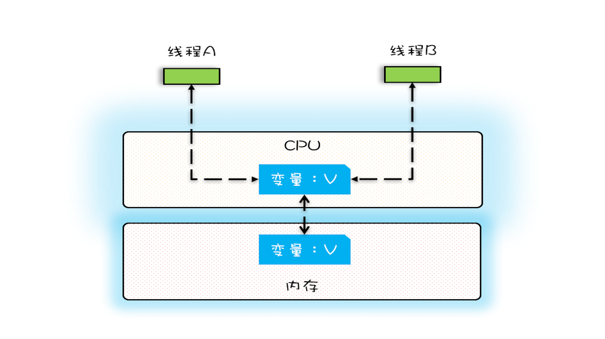
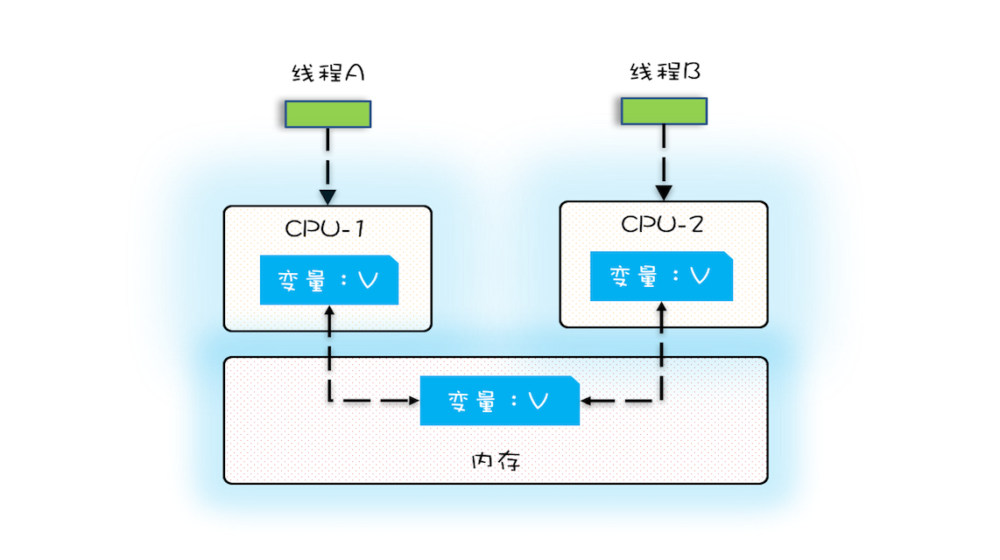
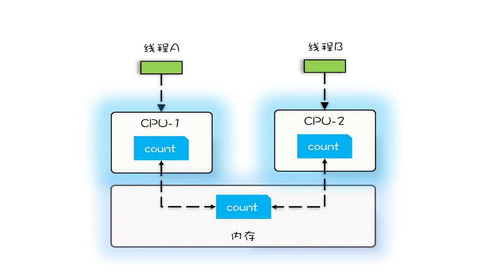
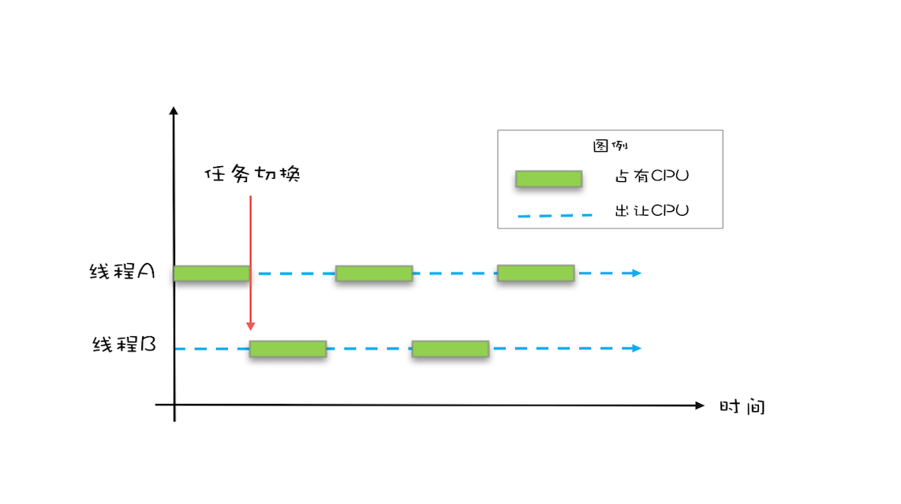
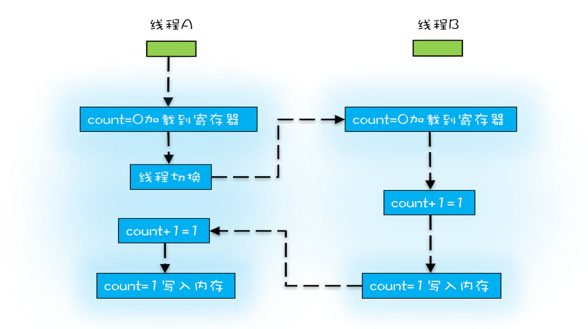
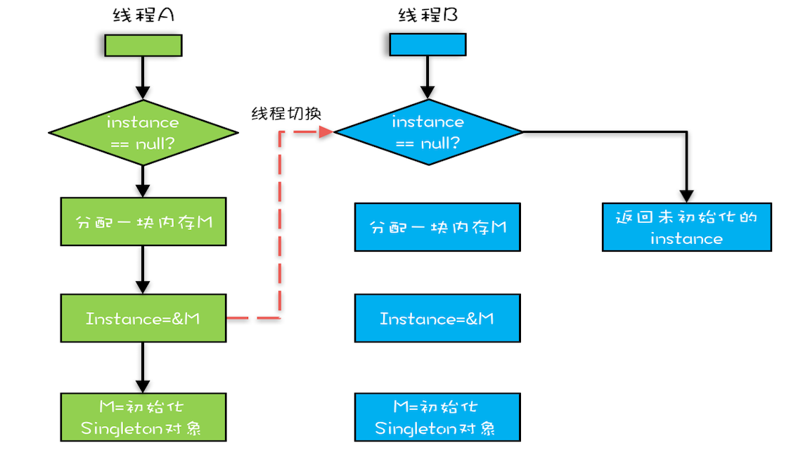

- 00 学习攻略 如何才能学好并发编程？.md.html
- 00 开篇词 你为什么需要学习并发编程？.md.html
- 01 可见性、原子性和有序性问题：并发编程Bug的源头.md.html
- 02 Java内存模型：看Java如何解决可见性和有序性问题.md.html
- 03 互斥锁（上）：解决原子性问题.md.html
- 04 互斥锁（下）：如何用一把锁保护多个资源？.md.html
- 05 一不小心就死锁了，怎么办？.md.html
- 06 用“等待-通知”机制优化循环等待.md.html
- 07 安全性、活跃性以及性能问题.md.html
- 08 管程：并发编程的万能钥匙.md.html
- 09 Java线程（上）：Java线程的生命周期.md.html
- 10 Java线程（中）：创建多少线程才是合适的？.md.html
- 11 Java线程（下）：为什么局部变量是线程安全的？.md.html
- 12 如何用面向对象思想写好并发程序？.md.html
- 13 理论基础模块热点问题答疑.md.html
- 14 Lock和Condition（上）：隐藏在并发包中的管程.md.html
- 15 Lock和Condition（下）：Dubbo如何用管程实现异步转同步？.md.html
- 16 Semaphore：如何快速实现一个限流器？.md.html
- 17 ReadWriteLock：如何快速实现一个完备的缓存？.md.html
- 18 StampedLock：有没有比读写锁更快的锁？.md.html
- 19 CountDownLatch和CyclicBarrier：如何让多线程步调一致？.md.html
- 20 并发容器：都有哪些“坑”需要我们填？.md.html
- 21 原子类：无锁工具类的典范.md.html
- 22 Executor与线程池：如何创建正确的线程池？.md.html
- 23 Future：如何用多线程实现最优的“烧水泡茶”程序？.md.html
- 24 CompletableFuture：异步编程没那么难.md.html
- 25 CompletionService：如何批量执行异步任务？.md.html
- 26 Fork_Join：单机版的MapReduce.md.html
- 27 并发工具类模块热点问题答疑.md.html
- 28 Immutability模式：如何利用不变性解决并发问题？.md.html
- 29 Copy-on-Write模式：不是延时策略的COW.md.html
- 3 个用户来信 打开一个新的并发世界.md.html
- 30 线程本地存储模式：没有共享，就没有伤害.md.html
- 31 Guarded Suspension模式：等待唤醒机制的规范实现.md.html
- 32 Balking模式：再谈线程安全的单例模式.md.html
- 33 Thread-Per-Message模式：最简单实用的分工方法.md.html
- 34 Worker Thread模式：如何避免重复创建线程？.md.html
- 35 两阶段终止模式：如何优雅地终止线程？.md.html
- 36 生产者-消费者模式：用流水线思想提高效率.md.html
- 37 设计模式模块热点问题答疑.md.html
- 38 案例分析（一）：高性能限流器Guava RateLimiter.md.html
- 39 案例分析（二）：高性能网络应用框架Netty.md.html
- 40 案例分析（三）：高性能队列Disruptor.md.html
- 41 案例分析（四）：高性能数据库连接池HiKariCP.md.html
- 42 Actor模型：面向对象原生的并发模型.md.html
- 43 软件事务内存：借鉴数据库的并发经验.md.html
- 44 协程：更轻量级的线程.md.html
- 45 CSP模型：Golang的主力队员.md.html
- 用户来信 真好，面试考到这些并发编程，我都答对了！.md.html
- 结束语 十年之后，初心依旧.md.html
- 捐赠
01 可见性、原子性和有序性问题：并发编程Bug的源头
如果你细心观察的话，你会发现，不管是哪一门编程语言，并发类的知识都是在高级篇里。换句话说，这块知识点其实对于程序员来说，是比较进阶的知识。我自己这么多年学习过来，也确实觉得并发是比较难的，因为它会涉及到很多的底层知识，比如若你对操作系统相关的知识一无所知的话，那去理解一些原理就会费些力气。这是我们整个专栏的第一篇文章，我说这些话的意思是如果你在中间遇到自己没想通的问题，可以去查阅资料，也可以在评论区找我，以保证你能够跟上学习进度。
你我都知道，编写正确的并发程序是一件极困难的事情，并发程序的Bug往往会诡异地出现，然后又诡异地消失，很难重现，也很难追踪，很多时候都让人很抓狂。但要快速而又精准地解决“并发”类的疑难杂症，你就要理解这件事情的本质，追本溯源，深入分析这些Bug的源头在哪里。
那为什么并发编程容易出问题呢？它是怎么出问题的？今天我们就重点聊聊这些Bug的源头。
并发程序幕后的故事
这些年，我们的CPU、内存、I/O设备都在不断迭代，不断朝着更快的方向努力。但是，在这个快速发展的过程中，有一个核心矛盾一直存在，就是这三者的速度差异。CPU和内存的速度差异可以形象地描述为：CPU是天上一天，内存是地上一年（假设CPU执行一条普通指令需要一天，那么CPU读写内存得等待一年的时间）。内存和I/O设备的速度差异就更大了，内存是天上一天，I/O设备是地上十年。
程序里大部分语句都要访问内存，有些还要访问I/O，根据木桶理论（一只水桶能装多少水取决于它最短的那块木板），程序整体的性能取决于最慢的操作——读写I/O设备，也就是说单方面提高CPU性能是无效的。
为了合理利用CPU的高性能，平衡这三者的速度差异，计算机体系结构、操作系统、编译程序都做出了贡献，主要体现为：
- CPU增加了缓存，以均衡与内存的速度差异；
- 操作系统增加了进程、线程，以分时复用CPU，进而均衡CPU与I/O设备的速度差异；
- 编译程序优化指令执行次序，使得缓存能够得到更加合理地利用。
现在我们几乎所有的程序都默默地享受着这些成果，但是天下没有免费的午餐，并发程序很多诡异问题的根源也在这里。
源头之一：缓存导致的可见性问题
在单核时代，所有的线程都是在一颗CPU上执行，CPU缓存与内存的数据一致性容易解决。因为所有线程都是操作同一个CPU的缓存，一个线程对缓存的写，对另外一个线程来说一定是可见的。例如在下面的图中，线程A和线程B都是操作同一个CPU里面的缓存，所以线程A更新了变量V的值，那么线程B之后再访问变量V，得到的一定是V的最新值（线程A写过的值）。

CPU缓存与内存的关系图
一个线程对共享变量的修改，另外一个线程能够立刻看到，我们称为可见性。
多核时代，每颗CPU都有自己的缓存，这时CPU缓存与内存的数据一致性就没那么容易解决了，当多个线程在不同的CPU上执行时，这些线程操作的是不同的CPU缓存。比如下图中，线程A操作的是CPU-1上的缓存，而线程B操作的是CPU-2上的缓存，很明显，这个时候线程A对变量V的操作对于线程B而言就不具备可见性了。这个就属于硬件程序员给软件程序员挖的“坑”。

多核CPU的缓存与内存关系图
下面我们再用一段代码来验证一下多核场景下的可见性问题。下面的代码，每执行一次add10K()方法，都会循环10000次count+=1操作。在calc()方法中我们创建了两个线程，每个线程调用一次add10K()方法，我们来想一想执行calc()方法得到的结果应该是多少呢？
public class Test {
private long count = 0;
private void add10K() {
int idx = 0;
while(idx++ < 10000) {
count += 1;
}
}
public static long calc() {
final Test test = new Test();
// 创建两个线程，执行add()操作
Thread th1 = new Thread(()->{
test.add10K();
});
Thread th2 = new Thread(()->{
test.add10K();
});
// 启动两个线程
th1.start();
th2.start();
// 等待两个线程执行结束
th1.join();
th2.join();
return count;
}
}
直觉告诉我们应该是20000，因为在单线程里调用两次add10K()方法，count的值就是20000，但实际上calc()的执行结果是个10000到20000之间的随机数。为什么呢？
我们假设线程A和线程B同时开始执行，那么第一次都会将 count=0 读到各自的CPU缓存里，执行完 count+=1 之后，各自CPU缓存里的值都是1，同时写入内存后，我们会发现内存中是1，而不是我们期望的2。之后由于各自的CPU缓存里都有了count的值，两个线程都是基于CPU缓存里的 count 值来计算，所以导致最终count的值都是小于20000的。这就是缓存的可见性问题。
循环10000次count+=1操作如果改为循环1亿次，你会发现效果更明显，最终count的值接近1亿，而不是2亿。如果循环10000次，count的值接近20000，原因是两个线程不是同时启动的，有一个时差。

变量count在CPU缓存和内存的分布图
源头之二：线程切换带来的原子性问题
由于IO太慢，早期的操作系统就发明了多进程，即便在单核的CPU上我们也可以一边听着歌，一边写Bug，这个就是多进程的功劳。
操作系统允许某个进程执行一小段时间，例如50毫秒，过了50毫秒操作系统就会重新选择一个进程来执行（我们称为“任务切换”），这个50毫秒称为“时间片”。

线程切换示意图
在一个时间片内，如果一个进程进行一个IO操作，例如读个文件，这个时候该进程可以把自己标记为“休眠状态”并出让CPU的使用权，待文件读进内存，操作系统会把这个休眠的进程唤醒，唤醒后的进程就有机会重新获得CPU的使用权了。
这里的进程在等待IO时之所以会释放CPU使用权，是为了让CPU在这段等待时间里可以做别的事情，这样一来CPU的使用率就上来了；此外，如果这时有另外一个进程也读文件，读文件的操作就会排队，磁盘驱动在完成一个进程的读操作后，发现有排队的任务，就会立即启动下一个读操作，这样IO的使用率也上来了。
是不是很简单的逻辑？但是，虽然看似简单，支持多进程分时复用在操作系统的发展史上却具有里程碑意义，Unix就是因为解决了这个问题而名噪天下的。
早期的操作系统基于进程来调度CPU，不同进程间是不共享内存空间的，所以进程要做任务切换就要切换内存映射地址，而一个进程创建的所有线程，都是共享一个内存空间的，所以线程做任务切换成本就很低了。现代的操作系统都基于更轻量的线程来调度，现在我们提到的“任务切换”都是指“线程切换”。
Java并发程序都是基于多线程的，自然也会涉及到任务切换，也许你想不到，任务切换竟然也是并发编程里诡异Bug的源头之一。任务切换的时机大多数是在时间片结束的时候，我们现在基本都使用高级语言编程，高级语言里一条语句往往需要多条CPU指令完成，例如上面代码中的count += 1，至少需要三条CPU指令。
- 指令1：首先，需要把变量count从内存加载到CPU的寄存器；
- 指令2：之后，在寄存器中执行+1操作；
- 指令3：最后，将结果写入内存（缓存机制导致可能写入的是CPU缓存而不是内存）。
操作系统做任务切换，可以发生在任何一条CPU指令执行完，是的，是CPU指令，而不是高级语言里的一条语句。对于上面的三条指令来说，我们假设count=0，如果线程A在指令1执行完后做线程切换，线程A和线程B按照下图的序列执行，那么我们会发现两个线程都执行了count+=1的操作，但是得到的结果不是我们期望的2，而是1。

非原子操作的执行路径示意图
我们潜意识里面觉得count+=1这个操作是一个不可分割的整体，就像一个原子一样，线程的切换可以发生在count+=1之前，也可以发生在count+=1之后，但就是不会发生在中间。我们把一个或者多个操作在CPU执行的过程中不被中断的特性称为原子性。CPU能保证的原子操作是CPU指令级别的，而不是高级语言的操作符，这是违背我们直觉的地方。因此，很多时候我们需要在高级语言层面保证操作的原子性。
源头之三：编译优化带来的有序性问题
那并发编程里还有没有其他有违直觉容易导致诡异Bug的技术呢？有的，就是有序性。顾名思义，有序性指的是程序按照代码的先后顺序执行。编译器为了优化性能，有时候会改变程序中语句的先后顺序，例如程序中：“a=6；b=7；”编译器优化后可能变成“b=7；a=6；”，在这个例子中，编译器调整了语句的顺序，但是不影响程序的最终结果。不过有时候编译器及解释器的优化可能导致意想不到的Bug。
在Java领域一个经典的案例就是利用双重检查创建单例对象，例如下面的代码：在获取实例getInstance()的方法中，我们首先判断instance是否为空，如果为空，则锁定Singleton.class并再次检查instance是否为空，如果还为空则创建Singleton的一个实例。
public class Singleton {
static Singleton instance;
static Singleton getInstance(){
if (instance == null) {
synchronized(Singleton.class) {
if (instance == null)
instance = new Singleton();
}
}
return instance;
}
}
假设有两个线程A、B同时调用getInstance()方法，他们会同时发现 instance == null ，于是同时对Singleton.class加锁，此时JVM保证只有一个线程能够加锁成功（假设是线程A），另外一个线程则会处于等待状态（假设是线程B）；线程A会创建一个Singleton实例，之后释放锁，锁释放后，线程B被唤醒，线程B再次尝试加锁，此时是可以加锁成功的，加锁成功后，线程B检查 instance == null 时会发现，已经创建过Singleton实例了，所以线程B不会再创建一个Singleton实例。
这看上去一切都很完美，无懈可击，但实际上这个getInstance()方法并不完美。问题出在哪里呢？出在new操作上，我们以为的new操作应该是：
- 分配一块内存M；
- 在内存M上初始化Singleton对象；
- 然后M的地址赋值给instance变量。
但是实际上优化后的执行路径却是这样的：
- 分配一块内存M；
- 将M的地址赋值给instance变量；
- 最后在内存M上初始化Singleton对象。
优化后会导致什么问题呢？我们假设线程A先执行getInstance()方法，当执行完指令2时恰好发生了线程切换，切换到了线程B上；如果此时线程B也执行getInstance()方法，那么线程B在执行第一个判断时会发现 instance != null ，所以直接返回instance，而此时的instance是没有初始化过的，如果我们这个时候访问 instance 的成员变量就可能触发空指针异常。

双重检查创建单例的异常执行路径
总结
要写好并发程序，首先要知道并发程序的问题在哪里，只有确定了“靶子”，才有可能把问题解决，毕竟所有的解决方案都是针对问题的。并发程序经常出现的诡异问题看上去非常无厘头，但是深究的话，无外乎就是直觉欺骗了我们，只要我们能够深刻理解可见性、原子性、有序性在并发场景下的原理，很多并发Bug都是可以理解、可以诊断的。
在介绍可见性、原子性、有序性的时候，特意提到缓存导致的可见性问题，线程切换带来的原子性问题，编译优化带来的有序性问题，其实缓存、线程、编译优化的目的和我们写并发程序的目的是相同的，都是提高程序性能。但是技术在解决一个问题的同时，必然会带来另外一个问题，所以在采用一项技术的同时，一定要清楚它带来的问题是什么，以及如何规避。
我们这个专栏在讲解每项技术的时候，都会尽量将每项技术解决的问题以及产生的问题讲清楚，也希望你能够在这方面多思考、多总结。
课后思考
常听人说，在32位的机器上对long型变量进行加减操作存在并发隐患，到底是不是这样呢？现在相信你一定能分析出来。
欢迎在留言区与我分享你的想法，也欢迎你在留言区记录你的思考过程。感谢阅读，如果你觉得这篇文章对你有帮助的话，也欢迎把它分享给更多的朋友。
© 2019 - 2023 Liangliang Lee. Powered by gin and hexo-theme-book.